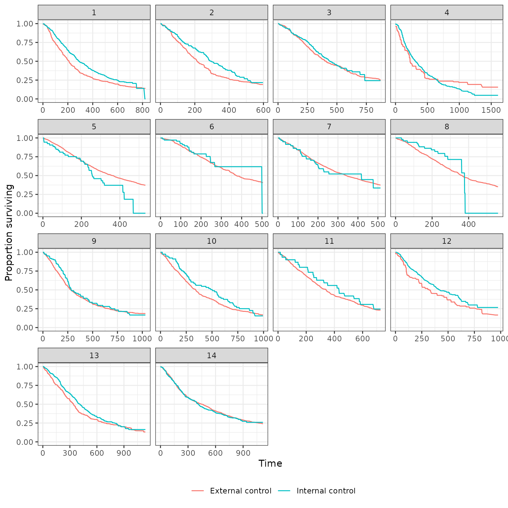
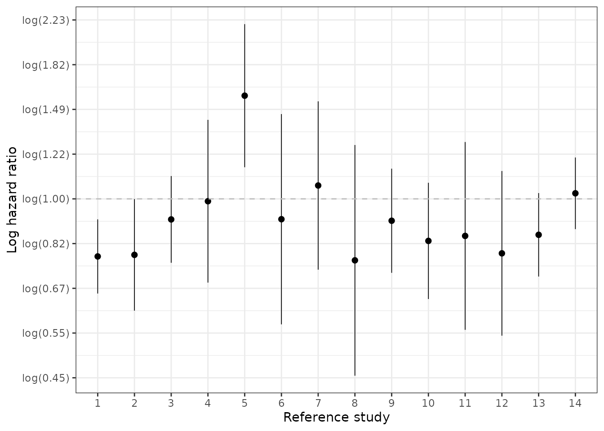
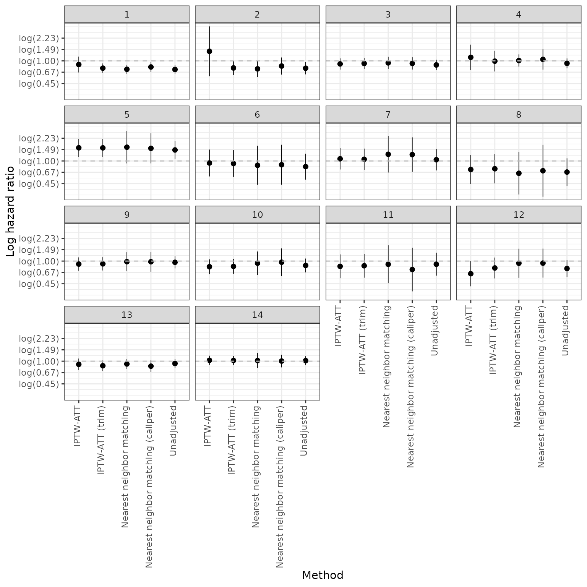

vignettes/05-ic-ec.Rmd
05-ic-ec.RmdThe objectives of this analysis is to compare the internal control to the external control. The external control is weighted using the propensity score methods discussed in vignette("03-balance"). The following R packages, settings, and global variables are used.
# R packages library("dplyr") library("ecmeta.nsclc") library("ggplot2") library("kableExtra") library("pins") library("purrr") library("survival") # Settings theme_set(theme_bw()) # Global variables RESPONSE <- "Surv(os_days, os_status)" SURV_FORMULA <- as.formula(paste0(RESPONSE, " ~ ic")) ID <-"patient_id" GRP_ID <- "analysis_num"
All analyses are based on the preprocessed data we have used previously; however, we now remove the RCT experimental arm from the dataset.
ec_ic <- pin_get("nsclc") %>% preprocess() %>% filter(!(source_type == "RCT" & arm_type == "Experimental")) %>% mutate(ic = ifelse(source_type == "RCT", 1, 0))
Our workflow requires us to separate outcomes and covariate data to avoid “cheating”. We continue to do that here:
y_list <- ec_ic %>% select(patient_id, analysis_num, os_days, os_status) %>% group_by(analysis_num) %>% group_split()
We estimate propensity scores, generate weights, and perform survival analysis in the same manner as has been done previously. We use a propensity score model without splines or interaction terms. The exposure group in the propensity score is the internal control and the reference group is the external control.
ec_ic_list <- group_split(ec_ic, analysis_num) ps_form <- get_ps_formula(spline = FALSE, interaction = FALSE, treat = "ic") ec_ic_ps_surv <- map_ps_surv(ec_ic_list, formula = ps_form, ydata_list = y_list, response = RESPONSE, id = ID, grp_id = GRP_ID, integer_grp_id = TRUE)
## Warning: glm.fit: fitted probabilities numerically 0 or 1 occurred
## Warning: glm.fit: fitted probabilities numerically 0 or 1 occurred
## Warning: glm.fit: fitted probabilities numerically 0 or 1 occurred
## Warning: glm.fit: fitted probabilities numerically 0 or 1 occurred
## Warning: glm.fit: fitted probabilities numerically 0 or 1 occurred
## Warning: glm.fit: fitted probabilities numerically 0 or 1 occurred
## Warning: glm.fit: fitted probabilities numerically 0 or 1 occurred
## Warning: glm.fit: fitted probabilities numerically 0 or 1 occurred
## Warning: glm.fit: fitted probabilities numerically 0 or 1 occurred
## Warning: glm.fit: fitted probabilities numerically 0 or 1 occurredSurvival curves stratified by whether a patient is in the internal or external control are plotted below. We plot both unadjusted curves and curves in which the external control is adjusted using propensity score methods. Survival curves are presented for each of the 14 pairwise analyses.
plot_survival(ec_ic_ps_surv$ate, method = "unadjusted", strata_labels = c("External control", "Internal control"))
plot_survival(ec_ic_ps_surv$ate, method = "iptw_att_trim", strata_labels = c("External control", "Internal control"))

plot_survival(ec_ic_ps_surv$ate, method = "match_nearest", strata_labels = c("External control", "Internal control"))
We also plot (log) hazard ratios. A log hazard ratio < log(1) = 0 implies that survival is better in the internal control and would suggest that external control analyses (trial experiment arm vs external control) would be biased toward the trial experimental arm. A log hazard ratio of log(1) = 0 would imply that the external control is very compatible with the internal control.
We start with our primary analysis where estimation was performed using inverse probability of treatment weights for estimation of the average treatment effect on the treated (IPTW-ATT weights) with trimming.
ec_ic_loghr <- hazard_ratio(ec_ic_ps_surv$ate, exponentiate = FALSE) y_breaks <- seq(-1, .8, by = .2) y_labels <- paste0( "log(", formatC(exp(y_breaks), format = "f", digits = 2), ")" ) ggplot(ec_ic_loghr[ec_ic_loghr$method == "iptw_att_trim", ], aes(x = factor(analysis_num), y = estimate)) + geom_pointrange(aes(ymin = lower, ymax = upper), size = .3) + xlab("Reference study") + ylab("Log hazard ratio") + geom_hline(yintercept = 0, linetype = "dashed", col = "grey") + scale_y_continuous(breaks = y_breaks, labels = y_labels)

We also assess sensitivity of the hazard ratios to the propensity score method.
y_breaks <- seq(-.8, .8, by = .4) y_labels <- paste0( "log(", formatC(exp(y_breaks), format = "f", digits = 2), ")" ) autoplot(ec_ic_loghr) + geom_hline(yintercept = log(1), linetype = "dashed", col = "grey") + scale_y_continuous(breaks = y_breaks, labels = y_labels)
